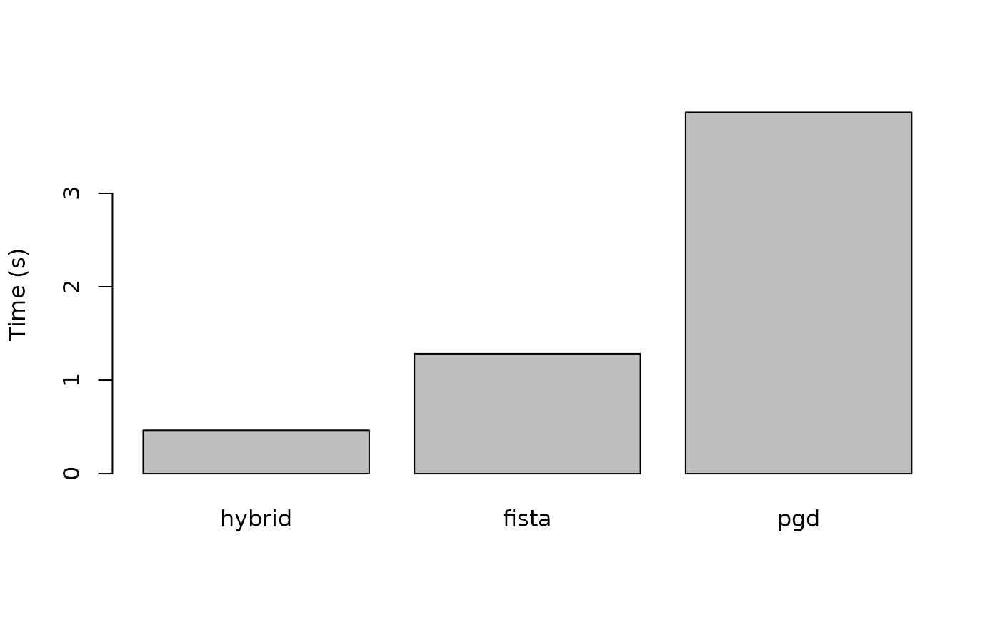
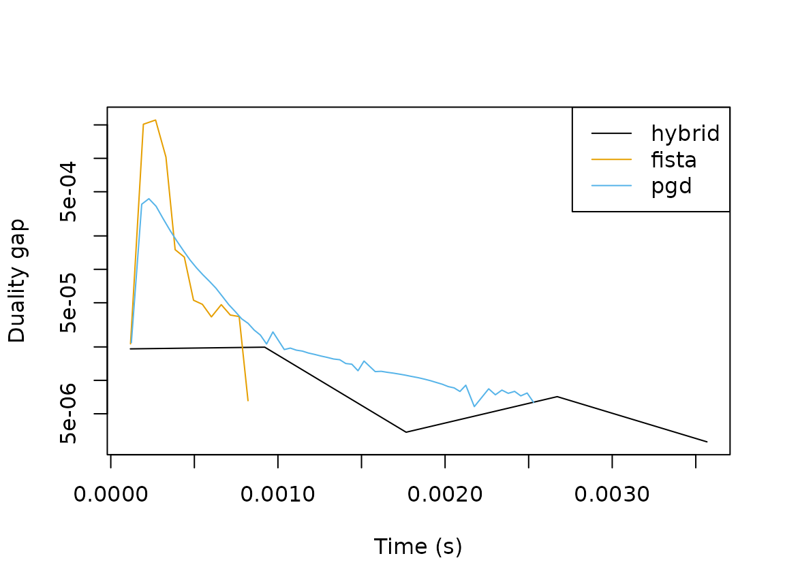

Solvers
SLOPE supports different solvers for solving the optimization problem. At the moment, we feature three different solvers:
- A Hybrid solver
- Proximal Gradient Descent (PGD)
- Fast Iterative Shrinkage-Thresholding Algorithm (FISTA)
The first of these, the Hybrid method, is an optimization algorithm developed developed by Larsson et al. (2023). It is a combination of proximal gradient descent and coordinate descent and is generally the preferred method, although currently not available for the multinomial logistic regression objective and turned off by default for Poisson regression due to numerical issues with the Newton step in the IRLS updates.
PGD is a simple and robust method that should work for any of the problems here.
FISTA is an accelerated version of PGD and the fallback default whenever the hybrid method isn’t available (or for the Poisson regression problem).
Example
Here we show a simple example of how the solvers compare for a
logistic regression problem with 100 observations and 10000 predictors.
We iterate over the solvers and fit a full SLOPE path using the default
settings in the package, setting diagnostics = TRUE to
collect primal and dual values in order to compute duality gaps (upper
bounds on suboptimality) for the different solvers.
library(SLOPE)
response <- "binomial"
data <- SLOPE:::randomProblem(n = 100, p = 1000, response = response)
solvers <- c("hybrid", "fista", "pgd")
fits <- lapply(solvers, function(solver) {
fit <- SLOPE(
data$x,
data$y,
family = response,
solver = solver,
diagnostics = TRUE
)
})First, we just compute the total time spent in each solver.
total_time <- sapply(
fits,
function(x) {
sum(sapply(x$diagnostics[["time"]], tail, n = 1))
}
)
names(total_time) <- solvers
barplot(total_time, ylab = "Time (s)")
Here is is clear that the hybrid method performs best followed by FISTA and PGD.
To see how the solvers compare for a single objective along the path, we collect the gaps at step 40 for each solver.
pen_minmax <- min(
vapply(fits, function(fit) {
max(fit$diagnostics$penalty)
}, FUN.VALUE = numeric(1))
)
res <- lapply(seq_along(fits), function(i) {
fit <- fits[[i]]
solver <- solvers[[i]]
d <- fit$diagnostics[fit$diagnostics$penalty == pen_minmax, ]
data.frame(
solver = solver,
time = d$time,
gap = d$primal - d$dual
)
})Then we plot progress on the objective for each solver.
ylim <- range(unlist(lapply(res, function(x) x$gap)))
colors <- palette.colors(
n = length(solvers),
palette = "Okabe-Ito"
)
plot(
res[[1]]$time,
res[[1]]$gap,
type = "n",
ylim = ylim,
xlab = "Time (s)",
ylab = "Duality gap",
log = "y"
)
for (i in seq_along(solvers)) {
lines(res[[i]]$time, res[[i]]$gap, col = colors[i])
}
legend("topright", legend = solvers, col = colors, lty = 1)